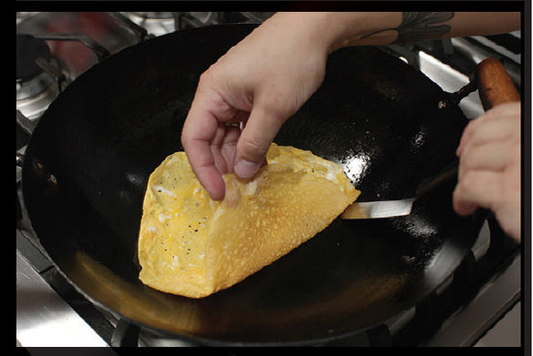
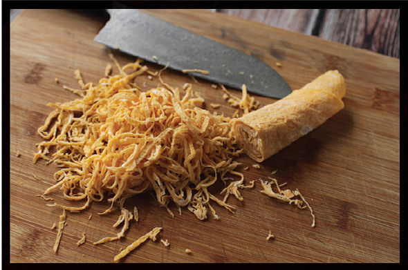
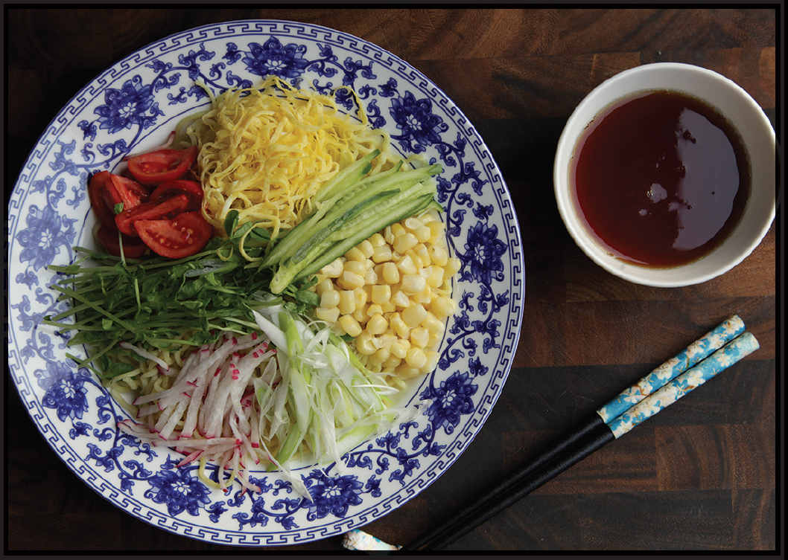

|
Yield Serves 2 |
Active Time 20 minutes Total Time 20 minutes |
You do not need to stick to these particular toppings. Other common toppings include shredded lettuce, slivered snap peas or snow peas, slivered cooked ham or roast pork, slivered surimi or chunks of crabmeat, slivered fresh or jarred bamboo shoots, or cooked shrimp. The important part is to use a colorful mix of toppings and to use whatever appeals to you most.
Hiyashi chūka was my grandmother Yasuko’s favorite noodle dish. It literally translates from the Japanese as “chilled Chinese.” The “Chinese” bit is a reference to the fact that ramen noodles are descended from Chinese lāmiàn and still considered a Chinese preparation by many Japanese people. To make it, you cook ramen noodles, chill them in cold water, then serve them with a variety of toppings, including shredded paper-thin omelet, plenty of fresh vegetables, and oftentimes slivers of ham or roast pork or seafood like shrimp, crab, or surimi (imitation crab). There are no hard and fast rules for what toppings to include, but the rule of thumb is to get a good mix of colors going. When possible, toppings should be cut into thin strips to mix with the noodles and make them easy to pick up together.
INGREDIENTS
For the Omelet:
2 large eggs
Pinch of sugar
Pinch of kosher salt
Vegetable oil
For the Sauce:
2 tablespoons (30 ml) water or dashi
½ teaspoon (2 g) grated fresh ginger
2 tablespoon (30 ml) shoyu or light soy sauce
1 tablespoon (15 ml) rice vinegar
2 tablespoons (25 g) sugar
1 tablespoon (15 ml) roasted sesame oil
1 teaspoon (5 ml) chile oil (optional)
2 teaspoons (about 5 g) toasted sesame seeds (optional)
For the Salad:
8 ounces (225 g) fresh ramen noodles
½ medium American or English cucumber or 1 Japanese or Persian cucumber (about 4 ounces/120 g), cut into fine matchsticks
1 ounce (30 g) fresh pea shoots or other small, tender greens (about 1 cup; optional)
Kernels cut from 1 ear of corn (about ¾ cup)
3 ounces (90 g) cherry or grape tomatoes, cut into quarters (about ¾ cup)
3 ounces (90 g) finely slivered or thinly sliced radish or turnip (about ½ cup)
3 to 4 scallions, white parts only, very finely sliced on a sharp bias or cut into hairs (see here)
DIRECTIONS
1 For the Omelet: Thoroughly whisk together the eggs, sugar, and salt. Rub a thin film of oil in the bottom of your wok or in a nonstick skillet. Heat over high heat until it just begins to smoke. Remove from the heat, rub another thin film of oil into it, then pour in a quarter of the egg mixture (it should bubble immediately) and swirl to form a very thin omelet. It should set almost immediately. Use a thin flexible metal spatula to release one edge of the omelet, then carefully pick it up with your fingertips or chopsticks and transfer to a cutting board. Repeat with the remaining eggs, stacking the omelets on top of each other on the cutting board, for a total of 4 omelets.
2 Roll the omelets up like a jelly roll, then slice very thinly into strips. Set aside.
3 For the Sauce: Combine the water or dashi, ginger, soy sauce, vinegar, sugar, sesame oil, chile oil, and sesame seeds (if using) in a small bowl and whisk until the sugar is dissolved.
4 For the Salad: Cook the ramen according to the package directions, then drain and rinse thoroughly under cold water. Divide between 2 individual bowls (typically hiyashi chūka is served on wide, shallow bowls). Arrange the toppings on top in a radial pattern. Pour the dressing over the top or serve it in a separate bowl on the side. Serve immediately.


